Introdução
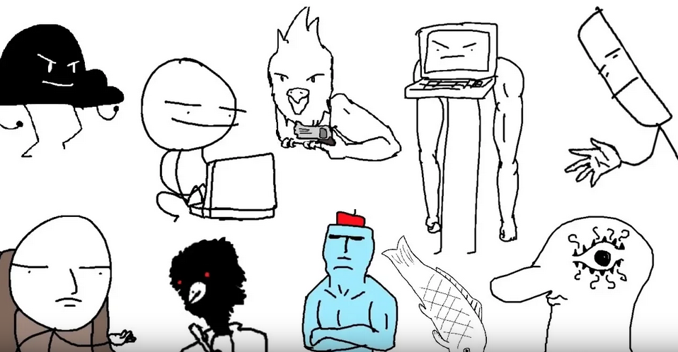Os "Menes Suecos" são um tipo de meme underground que surgiu por volta de 2016, em um grupo de facebook e canal no youtube. O tipo de meme é muito variado e difere dos comuns pelo seu estilo próprio.
Surgimento
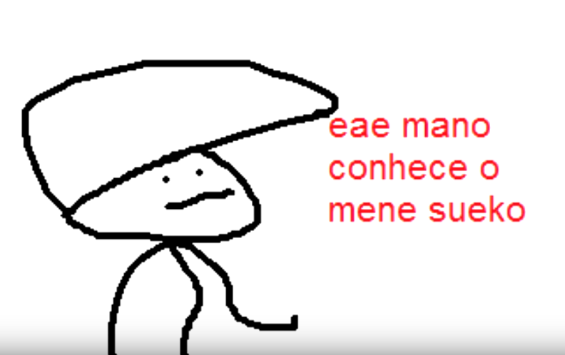Por volta de 2016, os memes começaram a surgir por meio de redes sociais e videos, rapidamente formando sua própria cultura e fãs dedicados. Tanto tirinhas quanto postagens e videos eram feitos e enviados pelas várias plataformas por qualquer pessoa que estivesse no grupo aberto.
Humor
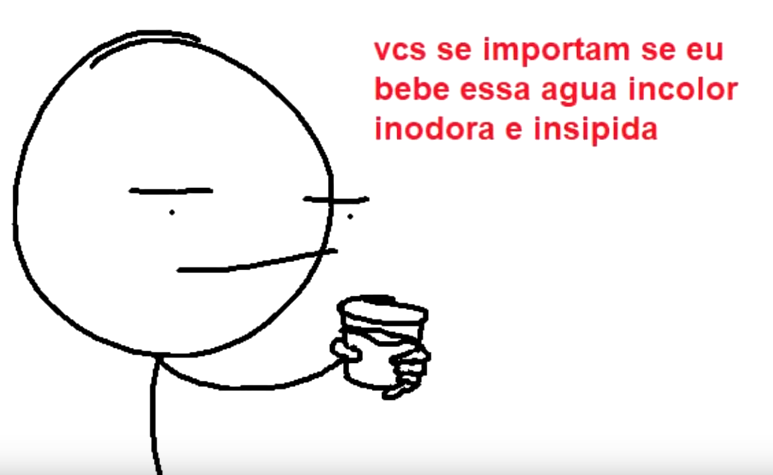O humor é caracterizado por piadas "nonsense" com um toque de referências históricas e aleatoriedades. Geralmente a graça ocorre em forma de audio, visto que as falas nos vídeos são lidas por uma voz robotizada de um aplicativo tradutor de linguas estrangeiras lendo em português.
Categorias
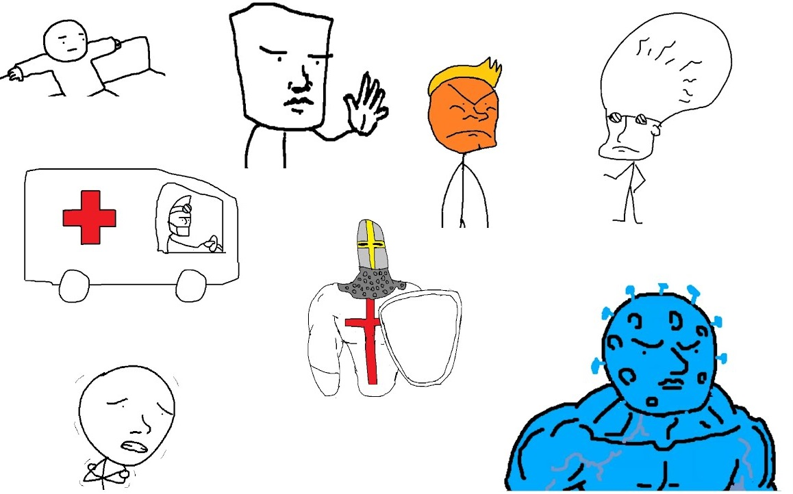As categorias dos memes podem variar, pois são feitos por um público variado. Ao longo do tempo algumas foram se consolidando e aparecendo em várias ocasiões. As principais categorias são:
Trocadilhos
Os trocadilhos são basicamente as piadas comuns ocasionais, fazendo troca de sentidos de palavras e imagens.
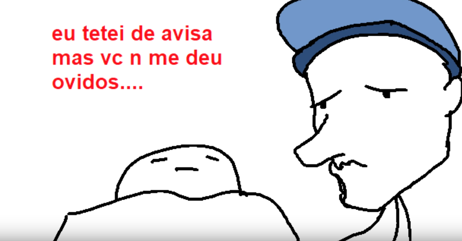 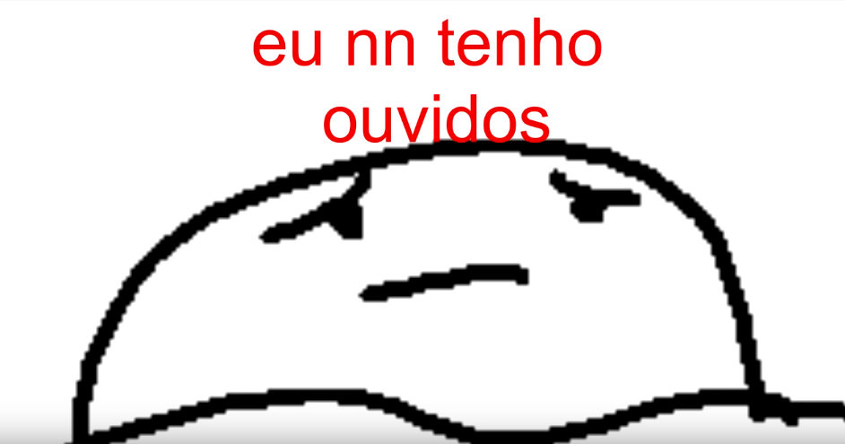Referências
As referências ocorrem de forma em que, quando assistido/visto o mene conta ou referencia algum acontecimento famoso de forma diferente do usual, referências históricas são as mais comuns e variam desde a tomada de jerusalém ná época das cruzadas até da revolução russa. Acontecimentos atuais também podem ser representados.
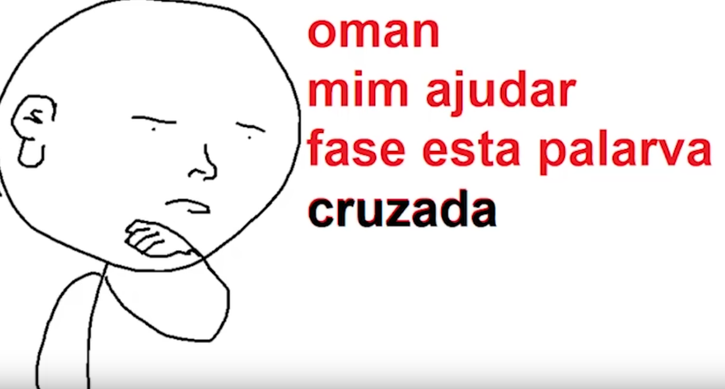 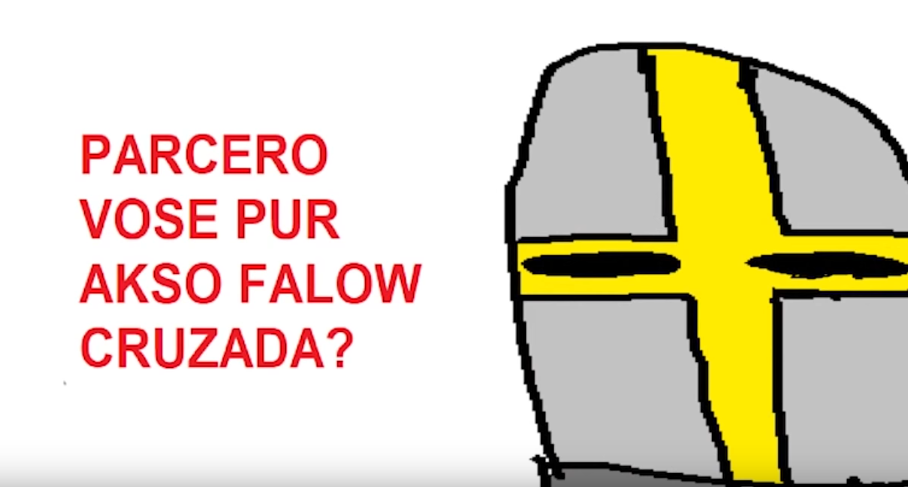 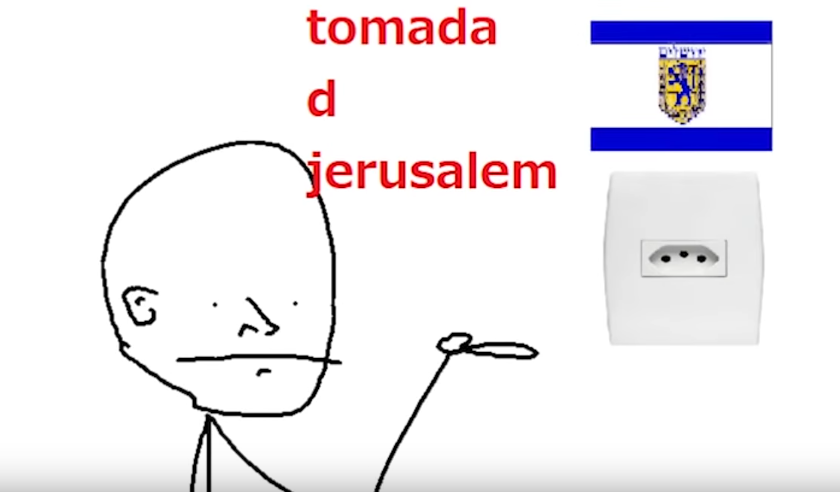Itens
Os itens são objetos encontrados ao longo do vídeo, que aparentemente, possuem poderes (atuando como as antigas correntes) e afirmam que se o espectador não realizar um determinado número de tarefas, algo irá acontecer (De bom ou ruim).
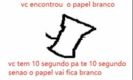Aleatoriedades
As aleatoriedades podem variar muito. Há videos em que tanta coisa acontece na tela que o espectador pode não conseguir entender o que se passa. Outros memes podem ser incorporados na tirinha, dando um sentido completamente diferente aos mesmos.
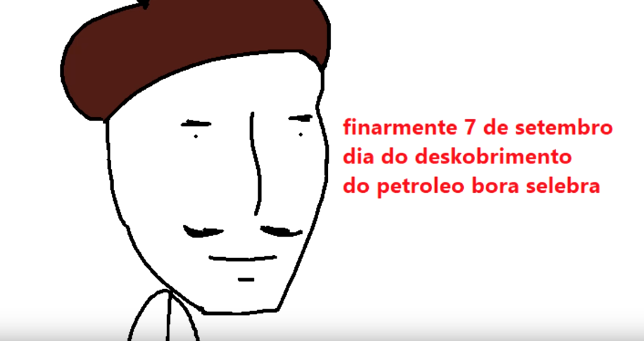Recepção
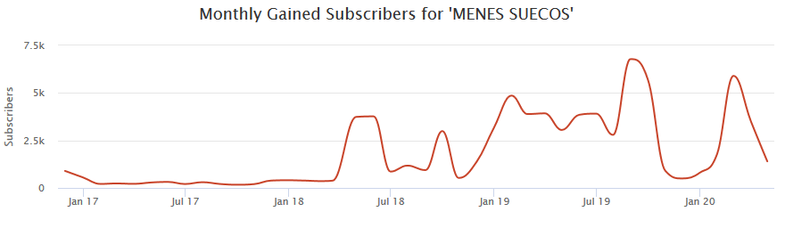Atualmente o canal principal de Menes Suecos no youtube possui mais de 80 mil inscritos e mais de 10 milhões de visualizações totais. A tração do canal se deu a partir do ano de 2018, e desde então, as visualizações aumentaram bastante, com uma comunidade muito ativa e participante também nos comentários, criando piadas próprias e referenciando antigos menes.
Envie seu Mene
Tem alguma idéia de um mene sueco novo? Envie para nós a imagem e ela pode ser apresentada neste site com o seu nome embaixo!